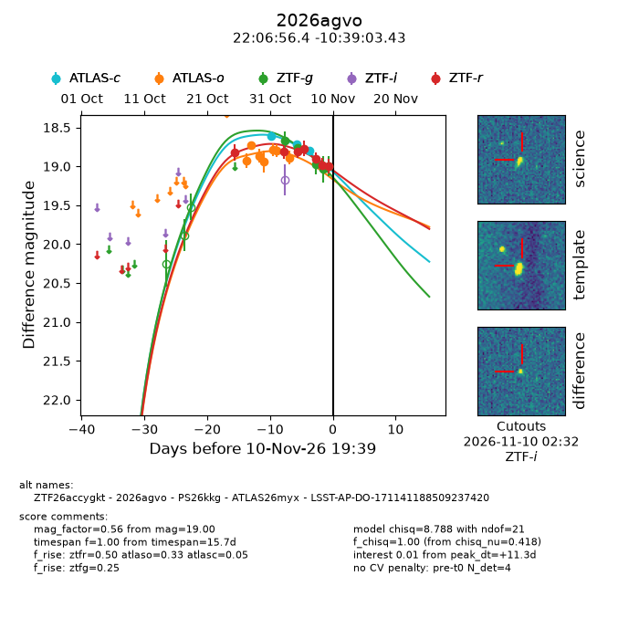
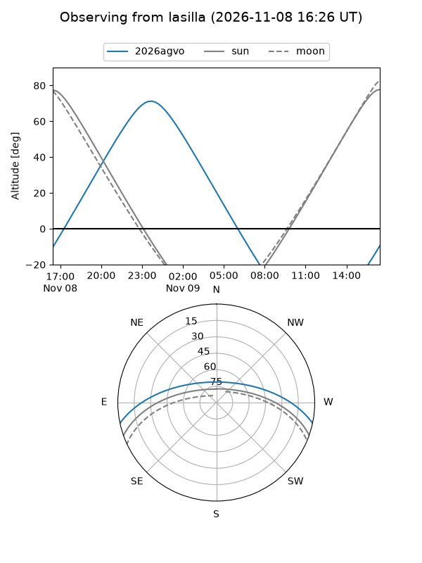
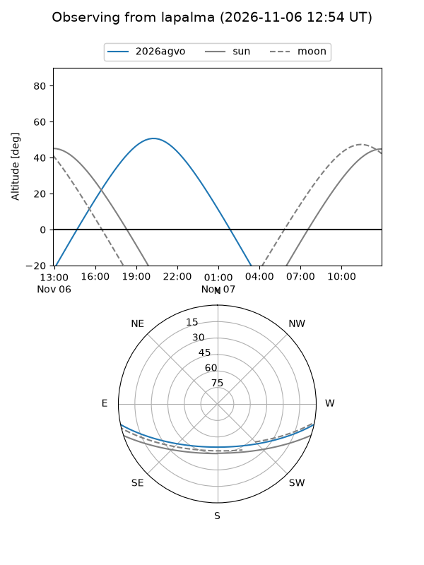
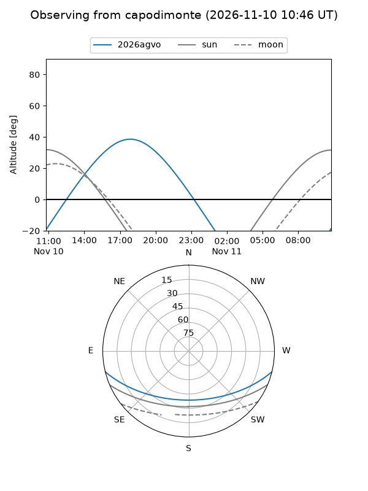
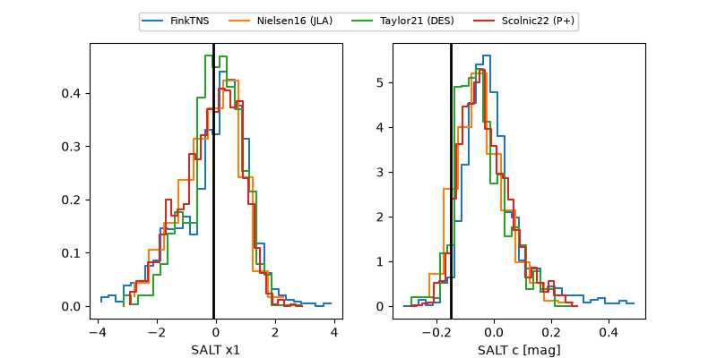

2026agvo
Target 2026agvo at 2026-11-10 19:42
Aliases and brokers:
FINK-ZTF: ztf.fink-portal.org/ZTF26accygkt
Lasair-ZTF: lasair-ztf.lsst.ac.uk/objects/ZTF26accygkt
ALeRCE-ZTF: alerce.online/object/ZTF26accygkt
YSE-PZ: ziggy.ucolick.org/yse/transient_detail/2026agvo
TNS name: wis-tns.org/object/2026agvo
Direct TNS query: direct search
alt names
ZTF26accygkt (ztf,fink_ztf)
2026agvo (tns,yse)
ATLAS26myx (atlas)
LSST-AP-DO-171141188509237420 (iau_lsst)
PS26kkg (panstarrs)
Coordinates:
equatorial (ra, dec) = 331.7351,-10.65095
equatorial (HMS+DMS) = 22:06:56.42,-10:39:03.43
galactic (l, b) = (47.9222,-47.99962)
Flags:
peak dt: +11.3
Photometry:
last atlasc=18.80, atlaso=18.89, ztfg=19.00, ztfr=19.00
3 atlasc, 7 atlaso, 5 ztfg, 7 ztfr detections
Lightcurve

Visibility



Additional plots
